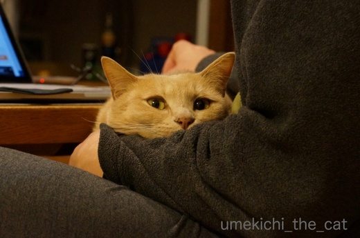
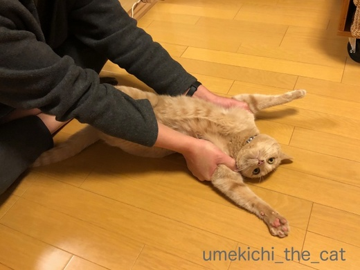
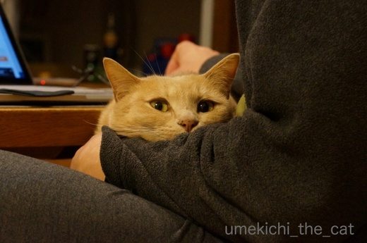
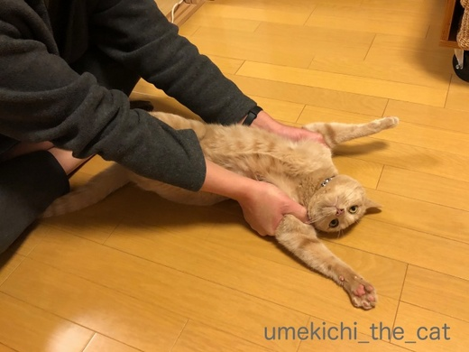

「おひざ」と「だっこ」の違いは？ [梅吉]
朝、ストレッチ中のおっとに詰め寄る梅吉さん。


![[猫]](https://blog.ss-blog.jp/_images_e/101.gif) わしの おひざすぺーす つくってやー
わしの おひざすぺーす つくってやー

場所を変えておひざゲット！
トイレに立とうとしたり無理にどけようとするとがぶっときます(^▽^;)
おひざはこんなに好きなのに・・・・・

（おっとの）だっこは好きじゃないみたい(*>艸<)
すごい顔だねー！

おなじすごい顔でも

これは楽しそう(≧▽≦)
抱き方の加減なんでしょうか。
私のだっこには30秒〜１分くらいならおとなしくしてます。
お膝はどちらでも延々と気の済むまでなんですけどw
 ↑ガブッと一押し↑
↑ガブッと一押し↑
堺にオープンした世界最大のMUJIに行ってきました。
生鮮食品も扱っている店舗なんですよ。
もちろん鮮魚コーナーも。
産直等を売り文句にしていますが同じ建屋にでっかいイオンがあるので
正直売れるのかな・・・と思いました。
値段もMUJIの方が１〜２割高いです。
高くてもMUJIの契約栽培農家が作っているとか
あまり見かけない様なものがあると売れるんじゃないかと思うのですが。
品揃えは普通のスーパーと同じです。
ベーカリーとデリがあってイートインコーナーで食べられる様になってます。
が、席数がちょっと少ないかな。
ビュッフェスタイルのカフェも品数がもう少し欲しいところ。
ここも席数があまりなくて平日なのに並んで順番待ちしていました。
ダメ出しばっかりになっちゃってすいません・・・・・
MUJI愛があるので見方が厳しくなっちゃう。
コンセプトは良いと思うのでもう少し改善を期待したいところです！
そそられるものが無かったし混んでたので
ランチはイオンのフードコートで食べちゃいました(⌒_⌒;



場所を変えておひざゲット！
トイレに立とうとしたり無理にどけようとするとがぶっときます(^▽^;)
おひざはこんなに好きなのに・・・・・

（おっとの）だっこは好きじゃないみたい(*>艸<)
すごい顔だねー！

おなじすごい顔でも

これは楽しそう(≧▽≦)
抱き方の加減なんでしょうか。
私のだっこには30秒〜１分くらいならおとなしくしてます。
お膝はどちらでも延々と気の済むまでなんですけどw
堺にオープンした世界最大のMUJIに行ってきました。
生鮮食品も扱っている店舗なんですよ。
もちろん鮮魚コーナーも。
産直等を売り文句にしていますが同じ建屋にでっかいイオンがあるので
正直売れるのかな・・・と思いました。
値段もMUJIの方が１〜２割高いです。
高くてもMUJIの契約栽培農家が作っているとか
あまり見かけない様なものがあると売れるんじゃないかと思うのですが。
品揃えは普通のスーパーと同じです。
ベーカリーとデリがあってイートインコーナーで食べられる様になってます。
が、席数がちょっと少ないかな。
ビュッフェスタイルのカフェも品数がもう少し欲しいところ。
ここも席数があまりなくて平日なのに並んで順番待ちしていました。
ダメ出しばっかりになっちゃってすいません・・・・・
MUJI愛があるので見方が厳しくなっちゃう。
コンセプトは良いと思うのでもう少し改善を期待したいところです！
そそられるものが無かったし混んでたので
ランチはイオンのフードコートで食べちゃいました(⌒_⌒;

カフェオレ色の梅吉

梅吉 2023年8月10日 永眠


梅吉と出会った譲渡会

犬猫の理由なき殺処分ゼロ
妄想広告
UMEKICHI 光

爆発的に早い！
時々攻撃的！
Thanks to Mr.Boss365
爆発的に早い！
時々攻撃的！
Thanks to Mr.Boss365

抱っこがキライな子は結構いますね。オシキャットのようなどう猛系猫種ではお膝も抱っこも全くムリですし、梅吉さんはよく甘えてくれる方ですよ。うちでは逆に抱っこしてほしいゴンに日に何度も襲われて怪我が絶えません。引き剥がしてもすぐ飛びかかってくるのでたまらんのです。
by zombiekong (2018-04-06 13:38)
お膝の上に乗ってくれるのいいな〜〜
憧れちゃうわ^m^
抱っこは自分からいくわけじゃないから嫌なのかなあ？
抱っこも好きになって〜って言いたいよね！
うちはベランダに出てるときだけ、ずっと抱っこOKです(笑)
by リュカ (2018-04-06 15:09)
あれ、梅吉くん肥えた？←どストレート('◇')ゞ
おっとのだっこは嫌で、ちぃさんの抱っこは1分くらい大丈夫？何がどう違うのか具体的に伝授ください<m(__)m>
by palpal (2018-04-06 15:14)
あーん、梅吉君のコメント書いて満足して送信ボタン押しちゃった！
MUJIの話も書きたかったの！(笑)
生鮮食品も扱っているなんてすごいわ！！
なんだかMUJIって安心しちゃうのよねー(笑)
化粧水もあまり高くないのに肌にあってるから、惜しみなく使ってますっｗ
by リュカ (2018-04-06 15:16)
あー！パパリンに抱かれた表情・・・たまりませぬ♪
by Ginger (2018-04-06 15:48)
お膝の上の梅吉さんはまったりとしているのに♪
なぜ抱っこは！！拒否反応がすごいですね(;^_^A
いろいろな表情が見れて嬉しいです♪
by きぃ (2018-04-06 16:15)
お膝に乗ってくれるの、いいなあ♪
飼い猫なら好きな率高め？
腕突っ張るお顔も可愛い～＾＾
みゅんは膝にはあまり乗りませんでした‥服によっては安定しなくて重くなってから滑り落ちたりしたのが嫌だったみたい＾＾； 隣で寝るのが好き。
抱っこは若いうちまでは大好きで、得意そうでごきげんでした。
病院へ連れて行くことが増えたら、途中ではっとするみたいで、掴まれるのはいやーって感じに変わって寂しかったです＾＾；
by sana (2018-04-06 17:25)
西武生まれの中では優等生。良いイメージを残している珍しい会社です。
実は買ったことがありません。><
by KENT0mg (2018-04-06 18:41)
梅吉さん開きになっていますね！
され放題ですね！
by ma2ma2 (2018-04-06 20:32)
膝の上に乗ってくれるなんて羨ましいです～。
ウチのはまったくダメです。^^;
by yes_hama (2018-04-06 22:03)
おっとさんににじり寄る梅吉さんのお顔がツボです♪
ウチのも抱っこして膝に乗せようとすると暴れて逃げるくせに、そのへん一周して戻ってきて自分から膝に乗ります。
面倒くさい男ですよね～(≧▽≦)
3歳ぐらいまでは膝にのせている時にもぞもぞ動くと「座布団はじっとしておけ！」とばかり噛まれて蹴られてぼこぼこにされましたが、さすがに6歳過ぎてそこまではしなくなりました。
by ゆきち (2018-04-06 22:13)
梅吉さん、お膝に乗ろうと詰め寄るのに、抱っこは苦手なのね。
好きなことだけして欲しいのは、ニャンさんらしいような（笑）
堺まで偵察ご苦労様でした。
生鮮品もあるのは珍しいですね。
鮮魚コーナー、MUJIの中に魚のニオイはしませんでしたか？
by kiki (2018-04-06 22:13)
ユキは私に抱っこされるのが好きみたいなんですよ。
奥さんは抱っこできません。
それだけが、私の唯一の誇りなんです。
嬉しくて、涙が出るんです(^^)
by riverwalk (2018-04-06 22:22)
抱っこ＝拘束される
おひざ＝自ら乗る
・・・こんな感じ？？ねこさまですから。(｡-_-｡)
世界最大のMUJI！そんなのできたのですね。
我が家の近くにもMUJIショップと直結のCAFEがあって
いっつも混んでます。
でもなんだかなー、惹かれないので一回も行ったことありません(｡-_-｡)
by Ja-Kou66 (2018-04-07 00:43)
みゅうくんも同じタイプですよ。
お膝は大好きなのに、抱っこは拒否されます＾＾；
by ぽちの輔 (2018-04-07 06:55)
あはは〜 ホントに詰め寄ってますね（＾＾）
ウチの子たちも、そろって抱っこギライのお膝好き･･･
あぁぁ、猫って、自由を愛する生きもの。。
by のらん (2018-04-07 11:10)
うちは抱っこ（かみさんのみ）は大好きですが、
膝には乗らないんですよねぇ(⌒-⌒; )
こんな風に「膝に乗せて〜」ってきてくれると
足が痺れて動けなくなっても幸せすぎて気づかないかもw
by ニッキー (2018-04-07 12:49)
MUJI、日本最大？！
なぜに堺？という感じですが、
写真見る限りかなり凄いですね。
by よーちゃん (2018-04-07 20:33)
自ら詰め寄っていく梅吉さん、可愛いです＾＾
あかりは、抱っこは私。お膝は夫。と決めているようです。
何で…？( ´∀｀ )
by マーヤ (2018-04-07 23:24)
ちぃさん
この無印のあるイオンは娘んちの近くです
阪急があった時は
焼き鳥屋さんが好きでした
無印好きの私ですが
開店してからまだ行ってないんです
混むのは疲れる…
活発に動いてはるちぃさん 尊敬です♪
by ヨッシー (2018-04-08 10:04)
有楽町の無印も似た様な感じでイートイン
は割高な気がしたけど異常な程混んでいま
した。野菜や小屋？も売っていますが、魚
までは・・さすが日本最大の堺店、攻めて
いますね（＾＾）。
by うりくま (2018-04-08 11:28)
zombiekongさん＞
ゴンちゃんは暴れん坊な上に甘えっ子なのですねー(^▽^;)
感情が爆発しちゃうタイプなのかしら。
梅吉は手のかかる方だと思っていましたが
ゴンちゃんのお話を聞いていると扱いやすいのかな・・・・・
ゴンちゃんも梅吉も落ち着くべきところに落ち着いたのでしょうね＾＾
リュカさん＞
自分から「だっこー」って来ることはないけど
抱っこされたいモードの時は何となくわかります。
そんな時は抱っこするとぴとって体を寄せてきますよ。
可愛いでしょ♡
反対にベランダで抱っこすると好き勝手に動きたくてしょうがないので
「はなせー！！」と激しく抵抗されます(^▽^;)
MUJIが安心ってわかるわー。
パウチに入ってる食品やお菓子も安心して食べられそうな気がするし美味しいから
食べたことのないものはMUJIでトライすることが多いです。
夏に出てくる「冷汁」オススメです＾＾グリーンカレーも好きw
palpalさん＞
こ、肥えてないもん！
換毛期だからもりもりっとして見えるだけよ・・・きっと・・・
実は２週間くらい体重計るのサボっているのよねー
再来週病院だから体重チェックちゃんとしなきゃ！
私とおっとの抱っこの違いは、ズバリ！歌があるかないかよ！！
オリジナルソングを歌いながら抱っこしてまーす(*>艸<)
Gingerさん＞
まっこと梅吉らしい良い表情でしょーＯ(≧▽≦)Ｏ
この顔見ると今日も元気だなって安心しますwww
きぃさん＞
力いっぱい抵抗するんですよねー (^▽^;)
でもこの表情を見るのも楽しみだったりしてw
どんなお顔もかわいい我が子です！
sanaさん＞
梅吉は滑り落ちそうになっても必死で踏みとどまろうとするので
下僕が体制を整えてあげなくちゃならなくて(^▽^;)
私の場合は膝が斜めにならない様に常に爪先立ち状態なので
足が痺れちゃいますー。
だっこ＝病院になっちゃうのは寂しいですね・・・・・
KENT0mgさん＞
西武系の企業、デパート、ホテルなどは一時の勢いがないですものね。
MUJI、確かに店内で男性の姿はあまり見かけないかも。
ナチュラルな雰囲気が気恥ずかしい！？
ma2ma2さん＞
ふふふ、二人とも楽しんでるんですよ＾＾
梅吉は構われるのが大好きなので！！
yes_hamaさん＞
面倒臭い男ってわかりますー！3秒で気が変わっちゃいますものね(*>艸<)
でもその３秒の気持ちの変化を如何にキャッチするか下僕としての
能力が試されている様にも感じます。
うまく汲み取った時には「やったわ！わたし！！」と自己満足の嵐www
座布団をぼこぼこ、おじいちゃんになって気難しくなったらまた復活するかも！？
kikiさん＞
自分のしたいことにはとことんまっしぐらなのに嫌なことは断固拒否！
これが猫ってっものなのね・・・と日々痛感しておりますwww
堺のMUJIはひろーいオープンスペースなので
お魚のニオイはしませんでしたが
街中のMUJI店舗で感じるアロマディフューザーの香りもしませんでした。
デリにはカレーもあったけどそのニオイもしなかったなぁ。
（ちなみにジビエカレーでした）
強力な排気口でもあるのかしら・・・・・
by ちぃ (2018-04-08 15:06)
ん、もう。梅吉さんったら、カワイイ(^.^)
おひざに、ちんまりとまとまる姿は、
ぎゅ、ぎゅーーっとしたくなりますね。
でも持ち上げると、やめれーーー！！なのねｗｗｗ
ウチの男子ニャンも一緒かも。
高いところは好きだけど、他力で持ってかれるのは、好きじゃないのかなぁ。。。
ＭＵＪＩ。スゴイですね！
カレーとかお菓子とかの既製品は差別化を図りやすいけど、
野菜や魚といった素材は、選んでもらうのは確かに難しそう。
人が少なかったら、ゆーっくり散策したいですね(^-^)
余談ですけど……。大谷クン、メジャーで大活躍ですね！！スゴイ！！＼(^o^)／
by morichan (2018-04-09 12:37)
riverwalkさん＞
おおおー！それは珍しいと思います！！
猫はだいだい女性に懐くと思ってたのでびっくりです(・o・)
それは大いに自慢しましょう＾＾
でもモモちゃんは奥様しかダメっぽい気がするのですがw
Ja-Kou66さん＞
確かに！！梅吉は拘束されるのが大っ嫌いです。
病院でも怖くてフーシャー言うんじゃなくて
「拘束されるのが気に入らなくてフーシャー言う」と獣医さんが (^▽^;)
MUJIのパウチに入ったカレーやらお菓子やらは好きで良く買うのですが
MUJIカフェは・・・・・
なんだかメニューが上を目指していて美しすぎるのですよ・・・
なので私も一回も行ったことありません。
食べるものはもう少し欲望を刺激するものであって欲しいですwww
ぽちの輔さん＞
圧倒的にお膝猫が多い様ですねー（あるいはお膝もだっこっもダメ）
抱っこがダメならお布団の中に入ってくるのも苦手な様な気もするのですが
それはOKなんですよねー。
もー、猫様は不思議だらけです！！
のらんさん＞
のらんさん宅もおひざ派ですか・・・
たまには思いっきり抱っこさせて欲しいですよねー。
抱っこしてもふもふしたいですよねー。
こんなに自由すぎるくらい自由に暮らしているんだからー！！
ニッキーさん＞
なんとー！コメントいただいた中の初の抱っこ派！！
にゃんずさんはゴッドマザー様のお膝にも乗らないのですね。
ゴッドマザー様ならなんでもありだと思っていたのでとっても以外。
やっぱり猫様はわかりませぬ (-_-メ)
よーちゃん＞
なぜに堺？
それはずばり空きスペースがたっぷりあった、だと思います＾＾
北花田のイオンには阪急百貨店が併設していたのですが
一年ほど前（だったかな）に撤退したのですよー。
その跡地の一角に無地が拡張オープンしたのです。
が、客層としてMUJIが行けるのか、は未知数です (^▽^;)
by ちぃ (2018-04-09 18:24)
マーヤさん＞
どうしてもおひざしたい時は
それ無理！と言う姿勢の上にも強引に乗っていくんですよ(^▽^;)
ま、乗られているおっとも嬉しそうだから良いんですけどw
あかりちゃんのその判断基準は忖度・・・？(*>艸<)
飼い主は平等に扱わなきゃ・・・って(≧▽≦)
ヨッシーさん＞
阪急、撤退しちゃいましたものねー。
あれはあれで良かったのですが
新店舗になるのも楽しいですよね＾＾
もっとも我が家は近くはないので滅多に行かないのですが (^▽^;)
私がMUJIに行った時は春休みだったので思ったよりも混んでいた様です。
MUJIカフェははお孫さんが喜びそうですよー。
ほとぼりが冷めたころにご一緒に行かれては？(≧▽≦)
うりくまさん＞
そうそう！MUJIのカフェやレストランって割高なんですよね。
そしてその割に食欲をそそられない・・・（ワタクシ比）
有楽町には小屋？が？？
無地は住宅もやっているのでその関連なのでしょうか。
庭における趣味の小屋みたいなのを想像しています＾＾
morichanさん＞
男性は抱き方があまり上手じゃないのかな？とも思うのですが
私だって子育てしたことないしー。抱っこがうまいとも思えません。
梅吉が私の抱っこに比較的大人しくしているのは
私が抱っこ時に歌う歌に聞き入っているのかもしれません(*>艸<)
MUJIのパウチに入った既製品は美味しいですよねー。
お菓子も好き♡
でも生鮮食品は・・・特別感のある日の食材ならまだしも
普段の食事の食材は私はイオンで買うなー。きっと。
全然余談じゃないです！大谷くん！！
ダルビッシュが日ハムから出て行った時には「ふーん。がんばれ。。」と
クールに対応していたのですが
大谷くんには心底頑張って欲しいなと思っています。
今朝も所々中継見ちゃったし。
なんでだろう・・・かわいいから？(〃▽〃)
漫画のストーリーの上を行く様な結果を出してくれるのも魅力です。
あとは悪い女に引っかからない様におばちゃんは願っておりますwww
by ちぃ (2018-04-09 18:58)